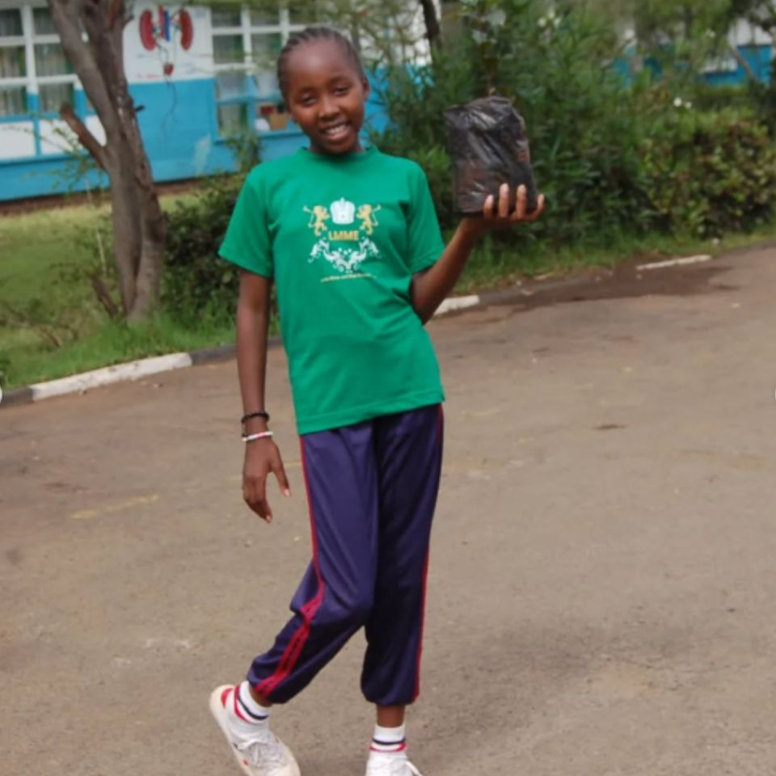
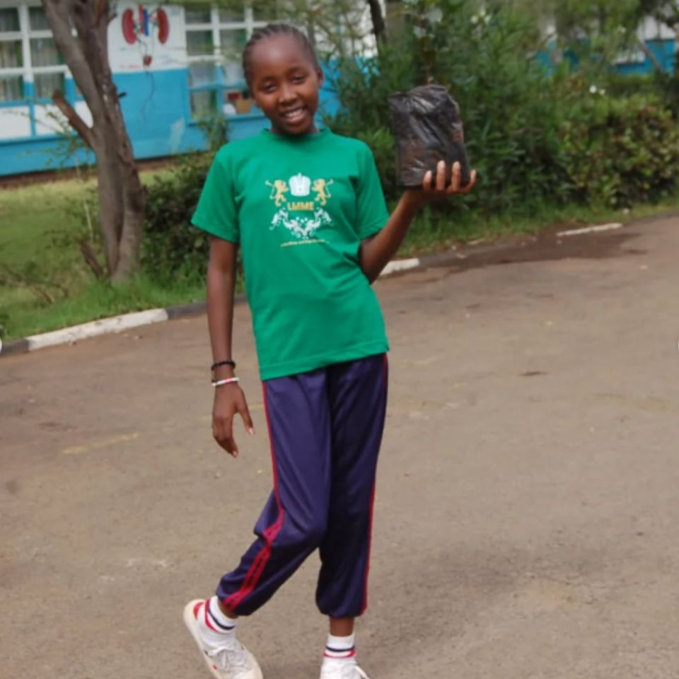

About Marya Green Foundation
Marya Green Foundation is a non-profit initiative focused on environmental conservation, education, and sustainable living. We work with communities and young leaders to create meaningful environmental action.
Hear the Voice of Nature
Welcome to the Marya Green Foundation — inspiring environmental conservation and empowering young leaders to take action for a greener, more sustainable planet.

My Profile
My name is Marya Chepkorir, I'm 14 years old and currently environmental champion of the year by Girl Up Kenya. I'm a grade 9 student at St. Georges primary school. Away from school, I'm passionate about environment conservation and girls empowerment. I'm championing for climate justice through participation in environment conservation initiatives such as tree planting activities — so far I have planted more than 5000 trees in six schools in Nairobi County and 3 schools outside Nairobi. I'm the current Little Miss Environment Nairobi County and serving as an ambassador of the Green Schools Project at Youth Care Africa.
Because of my love for nature, I have mobilized my peers to join me in the campaign against climate change. I'm educating my peers on the impacts of climate change on children and how we can mitigate these effects. Additionally, I'm championing menstrual equity through the Girls Tubonge Initiative where I meet teenage girls to share knowledge on menstrual management. I have donated more than 1000 sanitary pads to girls from Kangemi and Murang'a County, and I’m planning for another Girls Tubonge event in Bomet County where I’ll host over 300 girls. I’m looking forward to a more sustainable and habitable planet.

 
